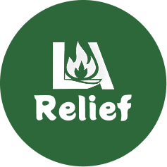

Project Purpose and Goals
-
Problem Statement:
During emergencies like wildfires, many donation centers, food banks, shelters, and other critical organizations are hard to find because they lack proper websites or aren’t listed on Google Maps. Many operate only through social media, making it difficult for those in need or those wanting to help to access information.
-
Solution:
Create a centralized platform where users can:
- Find nearby donation centers, food banks, shelters, and more.
- Access real-time wildfire updates, evacuation alerts and up-to-date air quality information.
- Volunteer, donate, and help organizations that lack an online presence.
- View essential information about safety tips, accessibility, and contact details.
Prototype

Green colour represents nature, the environment, and sustainability, aligning with efforts to aid wildfire recovery. The letters “LA” are designed with a flame in the center, symbolizing wildfires affecting Los Angeles or the broader region.
What did I build it with?
- Backend: Java & Spring Boot for handling APIs, PostgreSQL & Next.js for handling user data
- Frontend: Tailwind CSS, JavaScript (ReactJS)
- Cloud Platform: Hosted on Render
- Collaboration Tools: CI/CD pipelines with GitHub Workflows
- API: Various third-party integrations
- Additional tools: Figma, Docker, Recaptcha, Data Collection
Dynamic Map
- Search bar: to find organizations or donation locations by name or proximity to the user’s current location (via Google Maps API).
- Different colors and icons based on type (e.g., blue for clothing banks, green for food banks, red fire icons for active wildfire zones, purple for animal shelters).
UI/UX Designed Pages

Pre-evacuation Guide

Lessons Learned
- Deepened my understanding of integrating diverse APIs(CalFire, OpenWeather, Google Maps and LibreTranslate) with Java & SpringBoot and handling live geospatial data for dynamic map and live wildfire & air quality alerts.
- Collaborated with a team member in an Agile environment to develop full-stack applications, gaining hands-on experience in both front-end and back-end development.